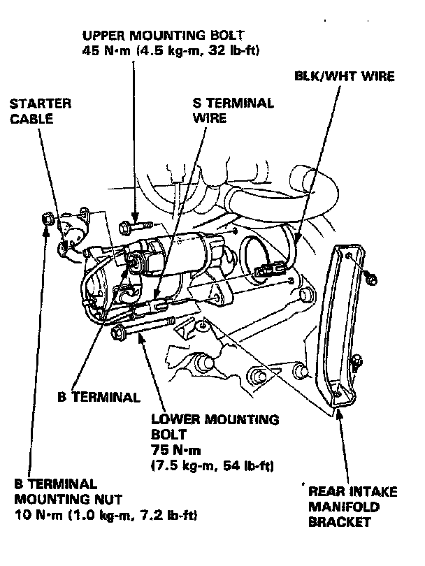

Starter Motor: Service and Repair
STARTER
NOTE: The radio has a coded theft protection circuit. If some service to the car requires any of the following, be sure you get the customer's code number before you begin work:
- disconnecting the battery.
- removing the No.39 BACKUP (10 Amp) fuse.
- removing the radio.
After service, reconnect power to the radio and turn it ON. The word "CODE" will be displayed. Enter the customer's 5-digit code to restore radio operation.
1. Disconnect the ground wire from the battery negative post.
2. Remove the rear intake manifold bracket.
3. Disconnect the starter cable from the B terminal on the solenoid, then the BLK/WHT wire from the S terminal wire.
4. Remove the 2 bolts holding the starter, then remove the starter.